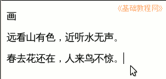
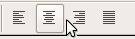
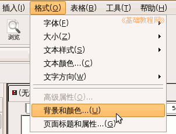
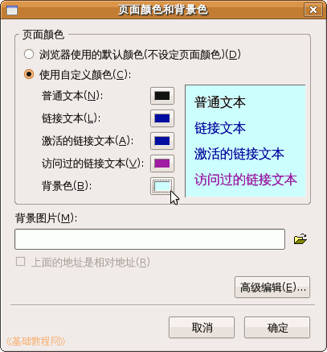

KompoZer 操作基础教程
作者：Teliute 来源：基础教程网
四、对齐和背景色 返回目录 下一课接着上一课文字效果，我们来学习文字的对齐方式，以及背景色的设置方法，下面我们来看一个练习；
1、启动KompoZer
1）点左上角菜单“ 应用程序－编程－KompoZer”，就可以启动KompoZer程序；
2）点菜单“格式－页面标题”，修改标题为“对齐和背景”，然后点菜单“文件－保存”命令，以“duiqi.html”保存到qqc文件夹中；
2、输入内容
1）输入古诗《画》，分三行内容，输完后，分别选中，点左上角的正文里，设为“段落“；

2）分别选中这三行文字，在上面的格式工具栏里找到一排横线，点击第二个“居中”按钮；

3）这时候文字都会到中间了，标题一般是居中的，保存一下文件；
3、设置背景
1）点菜单“格式－背景和颜色”，出来一个面板对话框；

2）选中自定义，在最下面的背景右边的小方块上点一下，选一个颜色然后点确定；

也可以在格式工具栏里，点下面的颜色块设置背景；
在下面的背景图片里，点“浏览”按钮，还可以选择一个背景图；
保存一下，点“浏览”按钮，看一下页面效果；
本节学习了KompoZer设置背景和对齐的基本操作，如果你成功地完成了练习，请继续学习下一课内容；
本教程由86团学校TeliuTe制作|著作权所有
基础教程网：http://teliute.org/
美丽的校园……
转载和引用本站内容，请保留作者和本站链接。